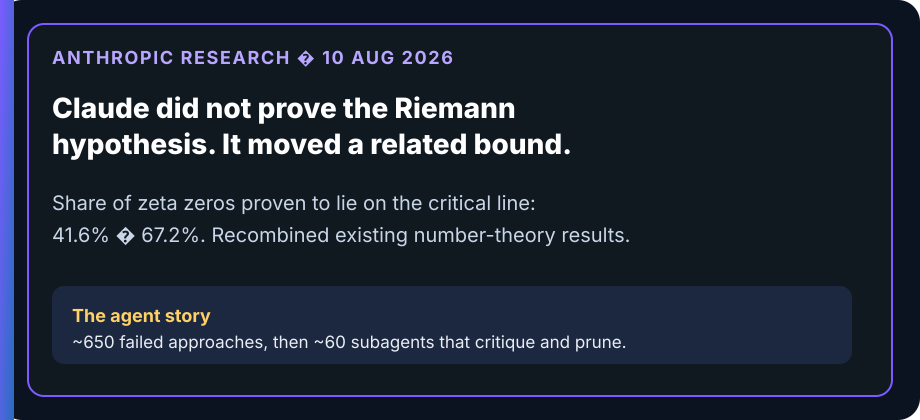

MGT 409 · Lecture 4 · Tauhid Zaman
Same tools as last week. Now they loop.
You still own the stop condition.
Syllabus: multi-step agents that call tools in a loop — and limits on what they may do without a human.
Instructor outline — remove before class.
send_email is not in it.The model asks for search_web. Your Python runs it. Done. HW1 energy: you write the path; cost is predictable.
Same tools, inside observe → decide → act until a stop fires. HW2 energy: you write the palette and the brakes. Path varies. So does the bill.
Scripts scale because the path is known. Agents need stop conditions because the path is not.
Observe goal + history + “no send.” Decide next tool, escalate, or finish. Act in your runtime — auth, logs, budget. The model proposes; you execute.
send_email, no buy, no rm -rf unless a human clicked yes.An agent without max_steps is a liability with an API key.

Anthropic · 10 Aug 2026
An unreleased research Claude improved the proven share of zeta zeros on the critical line from 41.6% to 67.2%.
Not a proof of RH. Anthropic does not expect these techniques to yield one. Experts looked on short notice — this is not journal peer review.
Primary: Anthropic, “Learning more about Claude’s mathematical capabilities” (10 Aug 2026). Context: Howlett, Scientific American (12 Aug 2026).
A non-mathematician staffer left the math choices to the model. Phase 1: about 650 ideas, none worked. Then ~1.5 days coordinating about 60 subagents.
Copy: many cheap attempts, explicit critique, explicit prune. Do not copy unbounded copies on one box — that is a turf war, not a swarm.
Role split: Anthropic footnote. Graphic: riemann-swarm.svg. Writeup: anthropic.com/research/riemann-zeta. Turf war: multiagent-systems.
FiftyFlowers wants business customers (planners, studios, venues) — volume buyers, not one-off retail.
source_url, or leave the field empty.draft_email. It does not have send_email.Observe → decide → act → stop before send. Grown-up split: the agent drafts; a human would approve. No send.
| Tool | When the agent should use it | HW2 cousin |
|---|---|---|
search_web | Find candidate businesses from the ICP | P3 |
fetch_page | Read a real page; keep a snapshot | P4 |
score_icp | Apply your rubric, not vibes | P5 |
draft_email | Write a 120–180 word note with cited facts | P6 |
finish | Schema complete; stop looping | traces + report |
send_email | Not in the palette. Human only. | explicit ban |
Fewer, well-described tools beat “here is the entire internet, good luck.”
output/traces/{run_id}.jsonl — graders debug this, not “it felt right.”source_url → empty field. Invented emails are a zero.Turn autonomy up only with eval evidence. The Riemann run still asked humans to check the paper. HW2 P8 is you disagreeing with the model on purpose.
A 5-step scout agent.
Search, fetch, finish JSON.
Sending email is out of the palette.
If it never finishes, repeats the same search, or invents a contact — those are today’s failure modes. Fix them in the loop, not in a paragraph.
| Symptom | Fix |
|---|---|
| Never calls finish | System prompt: “You MUST call finish to end.” |
| Same search 4 times | Track queries; return “duplicate query blocked.” |
| JSON soup | Validate in the finish tool; send the error back. |
| Invented contacts | Require source_url or empty string. HW2 P4. |
| Token lava | Lower max_steps; cheaper model for grunt fetches. |
Next: aim the loop at images — Lecture 5, image analysis.
Swipe or use buttons to advance � projector icon for presentation
{kind=link}